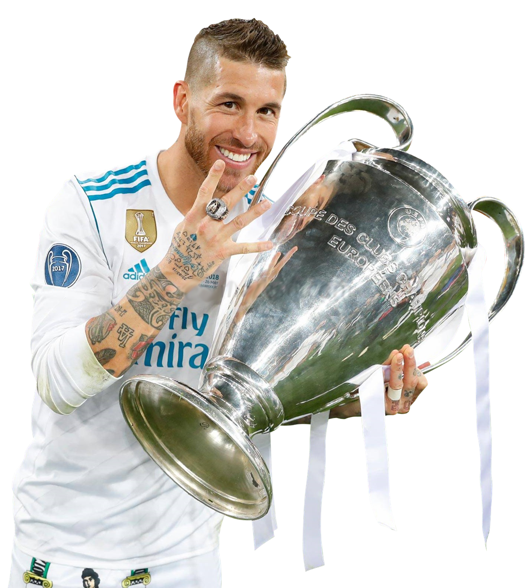
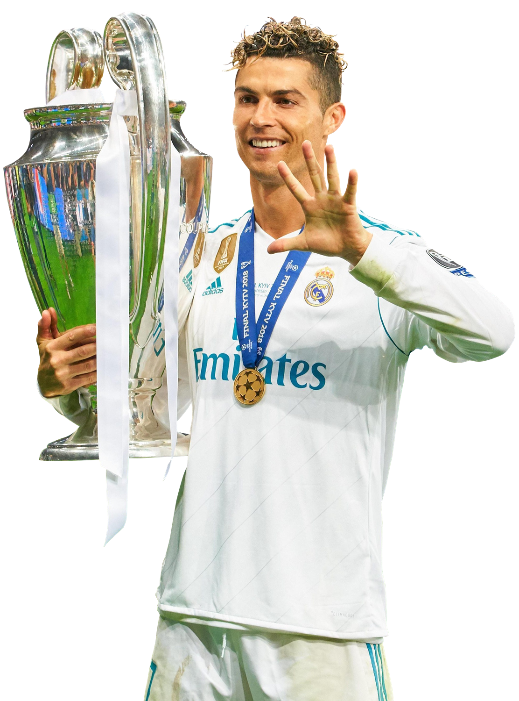

De eerste jaren
De geschiedenis van Real Madrid in het kort In 1902 wordt in Spanje een nieuwe club opgericht, toen nog onder de naam Sociedad Madrid FC. In 1920 krijgt de club van de koning de titel ‘Real’ geschonken, waardoor de club verder gaat als Real Madrid Club de Fútbol. In 1932 wordt voor het eerst de Primera Division gewonnen, de eerste van 32 overwinningen. Vervolg op dit succes liet lang op zich wachten. pas vanaf de jaren ’50, toen onder leiding van di Stéfano en Bernabéu Yeste, wist Real Madrid onder meer de Europa Cup I vijf jaren achter elkaar te winnen: een unieke prestatie. Dit succes zette zich lange tijd voort en kent ook Nederlands succes: trainer Leo Beenhakker wist bijvoorbeeld drie landstitels binnen vier jaar binnen te slepen. Na het enorme succes tussen de jaren ’50 en ’80 kwamen er in de jaren’90 wat moeilijkheden voor de club.
Real Madrid won vijfendertig keer de Primera División, negentien keer de Copa del Rey, elf keer de Supercopa de España, vier keer de UEFA Super Cup, twee keer de UEFA Cup, drie keer de wereldbeker voor clubteams, vier keer het wereldkampioenschap voor clubs en veertien keer de Europacup I / UEFA Champions League. Real Madrid is met veertien Europacup I / UEFA Champions League-overwinningen recordhouder van het toernooi, voor het Italiaanse AC Milan, dat het toernooi zeven keer wist te winnen. Enkele maanden na de oprichting van de club speelde het ter gelegenheid van de kroning van Alfons XIII tegen Barcelona. De Catalaanse club won met 3-1 en het was de eerste van vele wedstrijden die beide clubs tegen elkaar zouden spelen. In de loop der jaren zou de relatie tussen beide clubs uitgroeien tot een van enorme rivaliteit, wat resulteerde in El Clásico. Madrid won haar eerste grote prijs in 1905 door de winst van de Copa del Rey. In 1906, 1907 en 1908 veroverde de club deze beker opnieuw. Real Madrid behoorde in 1928 tot een van de oprichters van de Primera División, de hoogste Spaanse voetbaldivisie. De eerste competitiewedstrijd wonnen De Koninklijke met 5-0 van CE Europa. De eerste landstitel volgde in 1932. Het seizoen daarop prolongeerde ze de titel met succes, mede dankzij topscorer Manuel Olivares (26 doelpunten).
Het jaar 2000 betekende naast de Champions League-winst ook de komst van een nieuwe clubpresident, Florentino Pérez. Hij wilde van Real Madrid de grootste en beste club ter wereld maken door het aantrekken van stervoetballers. Hierdoor kreeg het elftal de bijnaam Los Galácticos (De Buitenaardsen). Bij zijn verkiezing werd Pérez door het merendeel van de leden enigszins argwanend bekeken, want voor zo'n sterrenteam was veel geld nodig. En dat terwijl de club bij zijn aantreden een schuldenlast van 300 miljoen euro had. Pérez loste dit op door een vijftig jaar oud trainingscomplex in het centrum van de stad aan de stad Madrid te verkopen voor 500 miljoen euro.